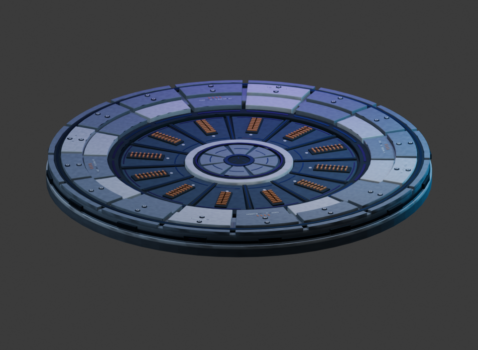
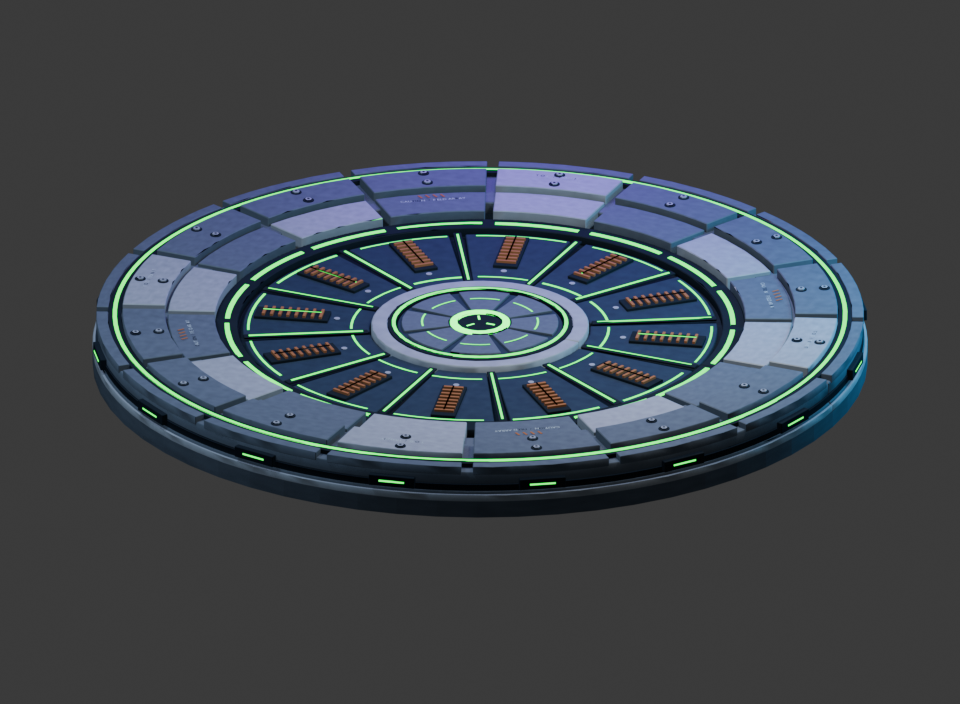
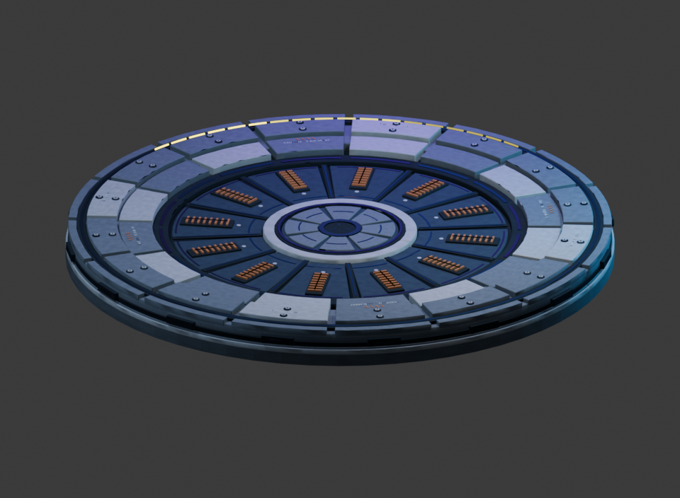

Teleporter status lights
No light without power. Green when ready. An animated yellow chase while pending.
The metal surface is accepted from the September 26 game test. The new colors are built and deployed in Archer's successful full build 16c. Asset and state checks passed; the user tests the new colors in game. Checks and build evidence.
Earlier surface repair and screenshot review — built and now accepted by the user; the pink color shown there is superseded.

OffNo device lights.

ReadyGreen channels and matching green status effects.

PendingA yellow head and tail circle the rim every three seconds during recharge, destination locks and card-pick pauses.
These previews use the exported meshes and native maps with approximate Blender shading. Game lighting and effects are not reproduced. Exported three-state preview · Editable master.
Blender previews · Native appearance awaits the in-game playtest.